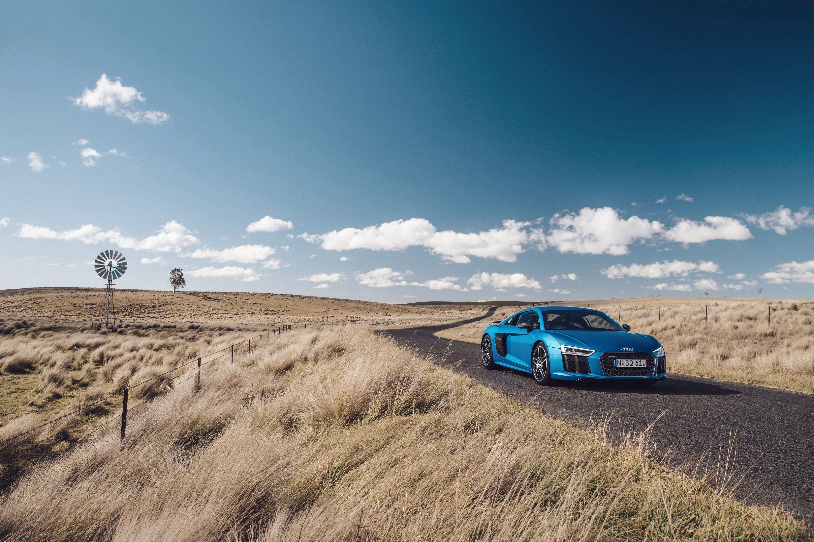
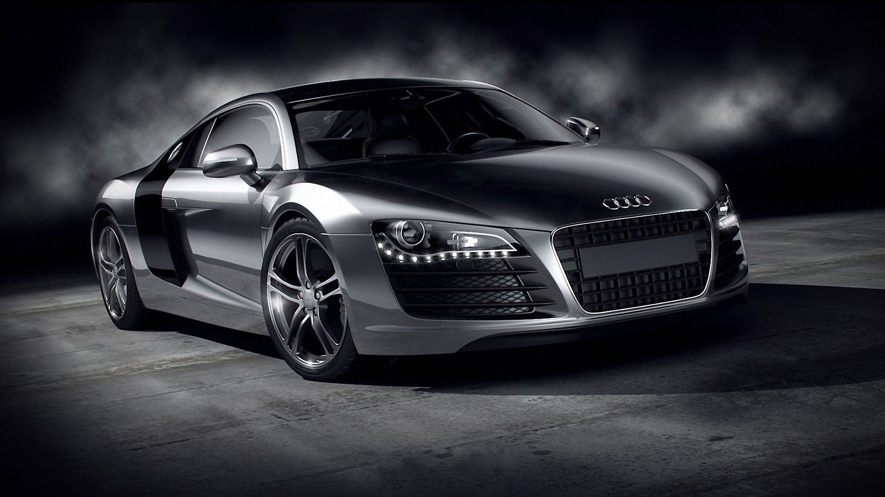
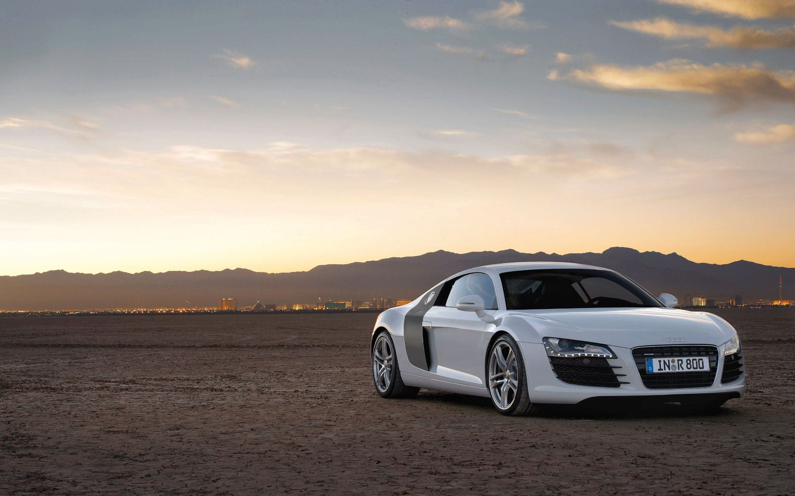
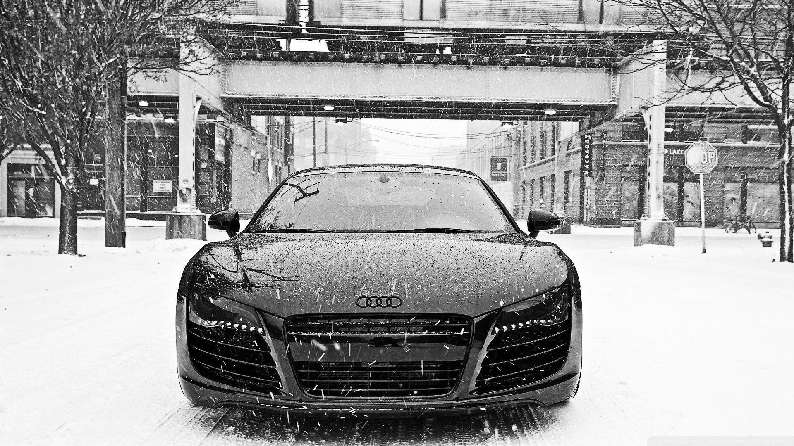
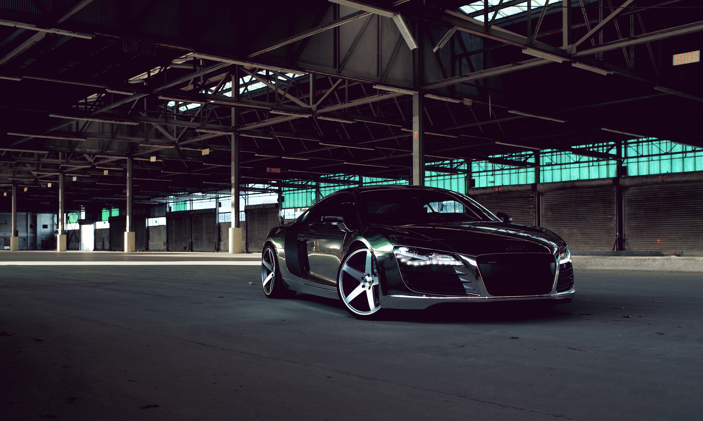
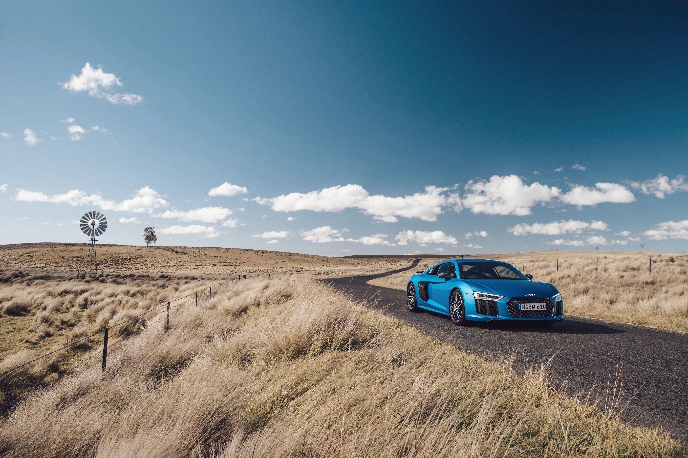
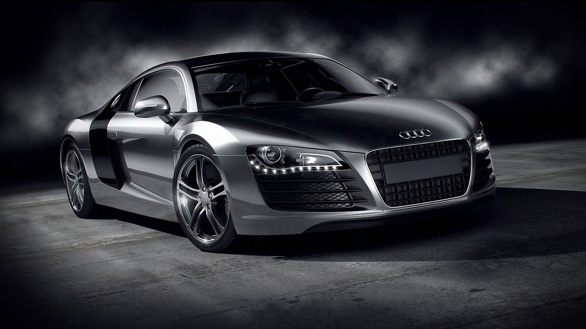
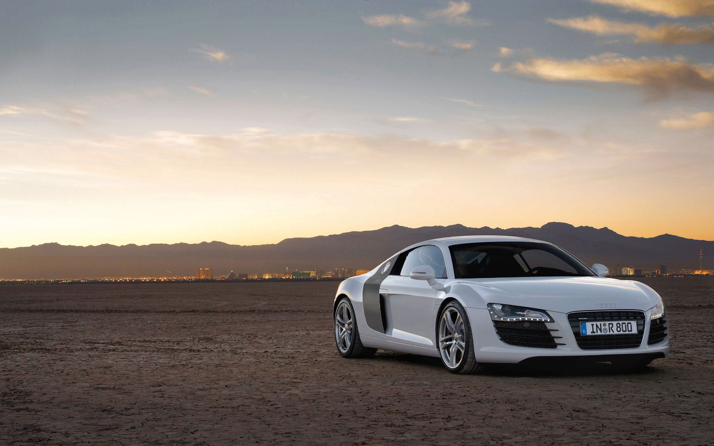
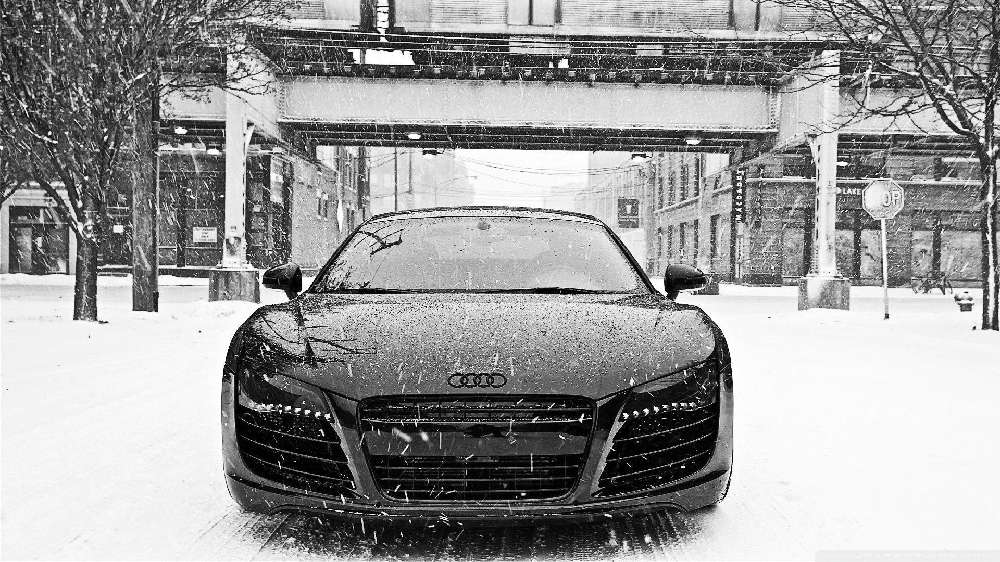
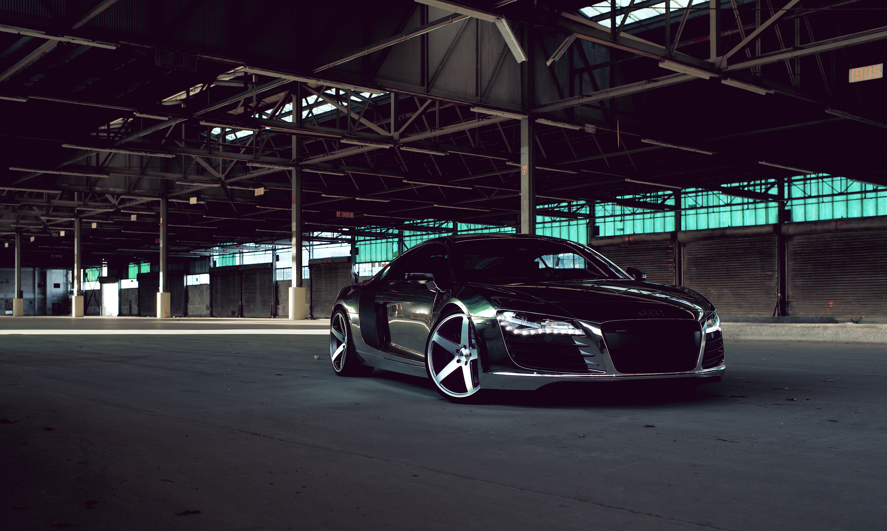

The Audi R8 is a mid-engine, 2-seater sports car with Audi's trademark quattro permanent all-wheel drive system. It was used by Tony Stark in the Marvel Cinematic Universe, and is based on the Lamborghini Gallardo and Huracán platform. It is also the first production car with full-LED headlamps.
The Audi R8 was based on the Audi Le Mans quattro concept car and was officially launched in 2006. Initial models included the R8 4.2 FSI coupé and R8 5.2 FSI coupé. Convertible models, GT models, Motorsport variants, and an all-electric version were introduced. Jacky Ickx described it as "the best handling road car today". Production of the Type 42 ended in 2015.


The second generation of the Audi R8 was unveiled at the 2015 Geneva Motor Show and is based on the Modular Sports System platform shared with the Lamborghini Huracan. Initial models included the all-electric e-Tron, V10 5.2 FSI, V10 plus, convertible (Spyder) variant, high performance V10 plus Spyder, and rear-wheel-drive model called the R8 RWS. In 2018, the R8 received a mid-cycle refresh with mechanical and exterior changes. The base R8 got a power boost from 532 hp to 562 hp, while the V10 Plus was renamed V10 Performance Quattro and the engine saw a power increase by 10 hp (7 kW).


 








